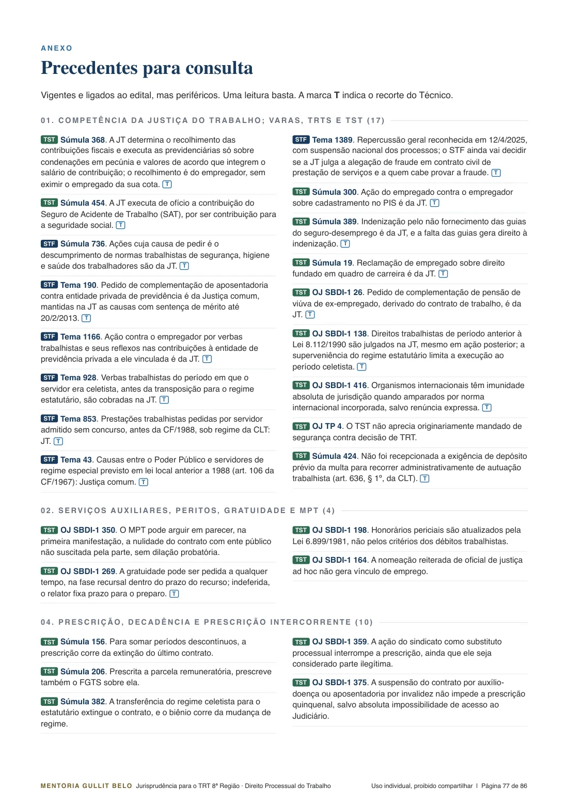
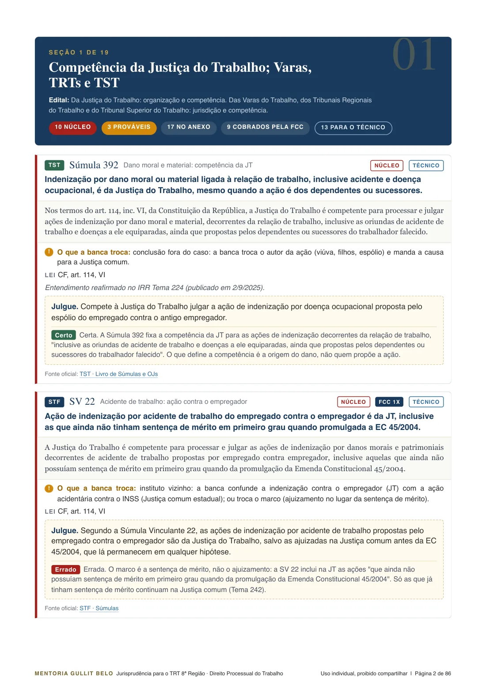
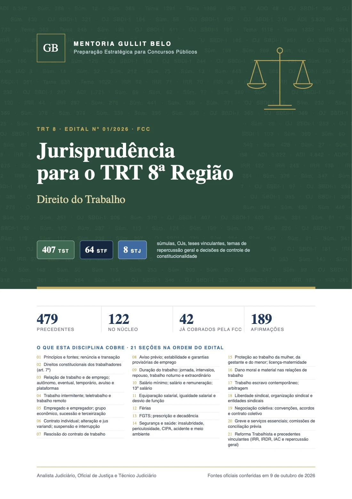
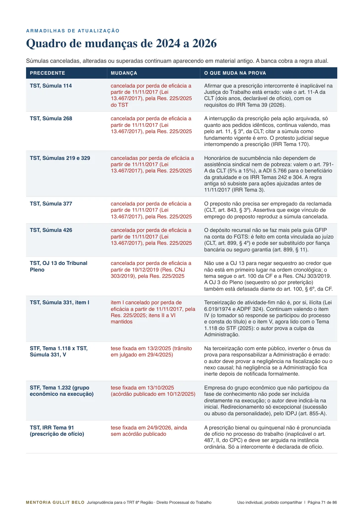
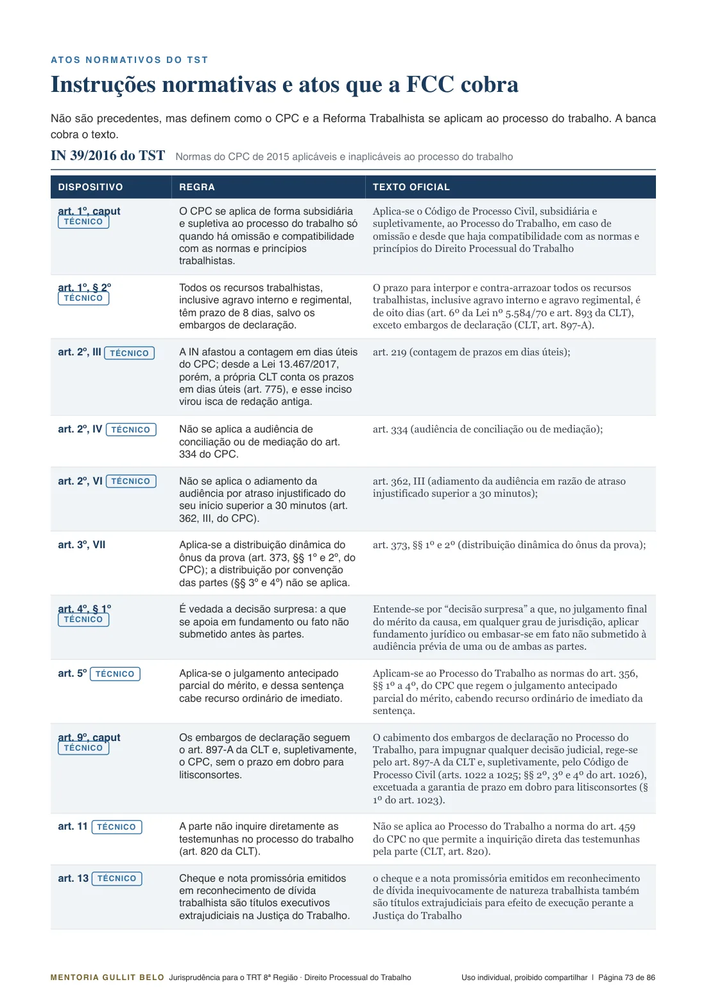

Material extra · TRT 8 · FCC
Por disciplina e na ordem do edital. Cada precedente traz a regra em uma linha, o texto oficial, a troca que a banca costuma fazer e uma afirmação para você julgar.



Como a banca usa a jurisprudência
Analisei as questões de 31 provas recentes da FCC, de tribunais, MPs e Defensoria. A banca pega o conteúdo de uma súmula ou de uma tese e troca o prazo, o sujeito ou a exceção. Veja um exemplo de Processo do Trabalho:
Súmula 86 do TST
"Não ocorre deserção de recurso da massa falida por falta de pagamento de custas ou de depósito do valor da condenação. Esse privilégio, todavia, não se aplica à empresa em liquidação extrajudicial."
Foi a súmula de Processo do Trabalho que mais apareceu nas provas analisadas.
Afirmação no estilo da banca
"Assim como a massa falida, a empresa em liquidação extrajudicial pode recorrer sem recolher custas nem efetuar o depósito recursal."
Errada. A troca de sujeito estende o privilégio a quem a súmula exclui. No material, cada precedente do núcleo traz essa troca descrita e uma afirmação para treinar.
Teste rápido
São afirmações autorais, no estilo da banca, tiradas dos cartões do material. Responda e veja o comentário.
Três níveis de estudo
O que já apareceu nas provas FCC analisadas, ou a súmula que interpreta o artigo mais cobrado do ponto. Cartão completo, com afirmação.
Teses novas e mudanças de 2024 a 2026, como as súmulas canceladas pelo TST em 2025 e os temas recentes do STF.
O restante vigente e ligado ao edital, em uma linha, no anexo de cada PDF. Uma leitura basta.
O que vem no material
As mesmas seções do TRT 8 dia a dia, para você usar os dois juntos. Toque em uma disciplina para ver os detalhes.
De onde vêm os precedentes
Como é cada cartão


Acesso por 12 meses
PDF por disciplina e cartões prontos para o Anki. Serve para Analista, Oficial de Justiça e Técnico.
Para quem compra o TRT 8 dia a dia
Avulso
Garantia de 7 dias. Baixe, estude e, se não for para você, peça o reembolso pela Kiwify dentro de 7 dias da compra.
Perguntas
O material diário traz, em cada tema, os julgados centrais daquele dia. Aqui estão todos os precedentes vigentes ligados ao edital, organizados por disciplina. Os do núcleo têm cartão completo com afirmação para julgar. Serve para estudar e para consultar até a prova.
Serve. O mesmo material atende Analista, Oficial de Justiça e Técnico, e cada precedente traz a marca do que está no programa do Técnico. Disciplinas que o Técnico não tem, como Direito Civil e Processo Civil, vêm sem a marca.
Cada PDF traz a data em que as fontes oficiais foram conferidas. Se o TST, o STF ou o STJ mudar algum precedente até a prova, você recebe a versão atualizada na área de membros e um aviso por e-mail.
Tem afirmações Certo ou Errado em todos os precedentes do núcleo e dos prováveis, no estilo da FCC, com gabarito comentado. São autorais: nenhuma questão de prova é reproduzida.
Cada disciplina vem num arquivo ZIP com o CSV dos cartões. No Anki do computador, use Arquivo, Importar, e escolha o CSV: cada linha vira um cartão, com a pergunta na frente e a resposta no verso. Depois sincronize para estudar no celular.
Aprovado em concursos de tribunais, MP e AGU; hoje servidor no TRT. Criador do @mentoriagb.
Sete disciplinas, texto oficial conferido nas fontes dos tribunais e afirmações para julgar em cada precedente do núcleo.